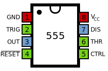
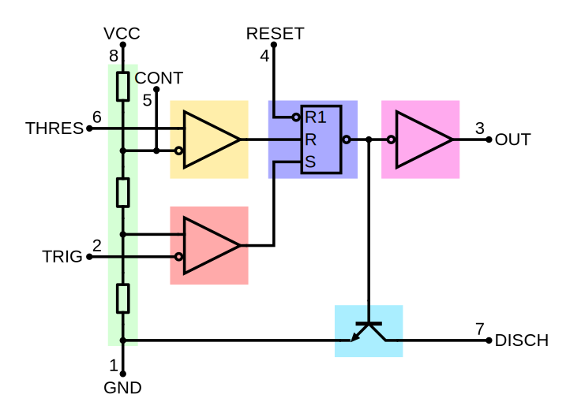
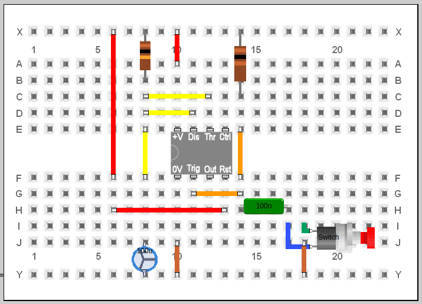

Temporitzador 555#
Pàgina en desenvolupament
Encara estem treballant en aquest document.
Esperem oferir-vos properament el seu contingut.
Disculpeu les molèsties.
El cicuit integrat 555 ha estat per molts dècades el cor de molts dissenys electrònics. Fabricat per primera vegada al 1972, s’han venut anualment més de mil millions (darrera estimació del 2017), i es pensa que és el circuit integrat més utilitzat a la història.

Esquema intern#
El circuit és força sofisticat, amb 25 transistors, 2 diodes i 15 resistències. El motiu del seu èxit és que altres components claus en el seu comportament es connecten exteriorment, fent un cor molt flexible.
Podem veure que l’integrat consta de diferents blocs que hem ressaltat en colors:

Divisor de tensió: Entre la tensió d’alimentació VCC i negatiu GND n’hi ha un divisor de tensió amb 3 resistències idèntiques de \(5 \ k\Omega\) (als integrats amb tecnologia bipolar, el valor és de \(100 \ k\Omega\) o més pels de tecnologia CMOS) per generar voltatges de referència pels comparadors. CONTROL està connectat entre le dues resistències superiors, de forma que podem variar amb una tensió exterior els voltatgws de referencia:
Si no connectem CONTROL, aquest divisor crea un tensió de referència superior de \(\frac{2}{3}\) de VCC i un voltatge de referència inferior de \(\frac{1}{3}\) de VCC.
Si connectem CONTROL, aquest divisor crea un tensió de referència superior \(V_{control}\) i un voltatge de referència inferior de \(\frac{1}{2}\) de \(V_{control}\).
Comparador Threshold: L’entrada negativa del comparador està connectada a la tensió de referència superior, i l’entrada positiva del comparador al pin THRESHOLD.
Comaparador Trigger: L’entrada positiva del comparador està connectada a la tensió de referència inferior, i l’entrada negativa del comparador al pin TRIGGER.
Latch: Una porta SR emmagatzema l’stat del temporitzador i està controlada pels dos comparadors. El pin RESET s’imposa sobre les altres dues entrades, així el latch (i, per tant, tot el temporitzador) pot ser posat a RESET en qualsevol moment.
Output: La sortida del latch es copia per una etapa de sortida amb configuració Push–pull que pot conduir fins a \(200 \ mA\) amb tecnologia bipolar, menys en el case dels temporitzador CMOS.
Discharge: A la vegada, la sortida del latch controla un transistor que actua com a interruptor digital i connecta el pin DISCHARGE a negatiu (interessant per descarregar un condensador de consigna de temps) o el deixa desconnectat.
Com ja hem comentat aquests blocs es tradueixen en ub esquena sofisticat:
Integrat 555 amb tecnologia bipolar |
Integrat 555 amb tecnologia CMOS |
|---|---|
|
|


Show code cell source
%%html
<iframe src="https://www.falstad.com/circuit/circuitjs.html?ctz=CQAgzCAMB0l3BWEDYCYyoOytQTgByaT74CMSAbACwibKTICmAtKaQFACGIqJIpFfOHw0BQ3PwYNS8eMmgVMM1BTAJcmVWFI0w0MAcNHjk2Vx58VukT2ogJMqKdkgKCih89ev8xctXqmgY6znDsAE48VAwIFFHSkDQx8BHxkjSo0fwIqE4IKQDuaeS5mQy8UqllFuVZGELJYUXVJRZCrZDszVkyGdjpUF08-b3DpfiVzf0VbTWDRVR2pJogi6K4uZ1FYDakNjvrm0MH-BurdtVb5xlZazyx88I3DCeZDcc21XekZ50ASmkHi04lJVgknFJoAh2AC+A9LEknD1QZDoZE4XE+KRUKCZCl0e0cSAsTYEoViYTygJ+ESrqhqdiqXE1EciiSaAj3gBjClRIR8FlOMAsOgoPyQFRqDRaEIwOAcADmvMFAsEENSJzAaruWoaoSG3xWVFwcWWIINdl1qxN4DVnXIEFeDzuqAepB4kkk7AdT34RqWK3dmy9CxtZutzLt7AA8sgKNIVhQGStJry9hl2Y9ObM3oMAC7gXi2oR4SN693MTDQfBqBCkMASthEXAYWjQFsIBBayA5V34BD9ljtOAgAAmjAAZpwAK4AGzzQ3pzJyPBtgs6StLvq30T1V3qxd9Vs6AA8adJyPx8A49qt+HFRwBLADOXIAFpxwgrGOwz9iHJg7SYKIZB3tSebhI+CrfuEv7nlEuR7EgmRIKIcR5m+4SMM+b4APazqOi4jIkYyFoMZ5YKUuQYOUqH3iAXK4QAdhB+HsAARnG1G4OUI5ZHSdRFtUJwCS8nxrqS7AAJIRn6cSxAmIJQFCXq4TwEDUgw0S4A4kLyrErpOKUjrsGp2hkVpMimnp8DSgZSDuhwQA" width="800" height="600"></iframe>
Modes de funcionament#
Amb l’ajut de uns pocs components externs, aquest xip pot fer diferents funcions treballant en 4 modes diferents:
Astable#
L’integrat opera com un oscil·lador electrònic:
Show code cell source
%%html
<iframe src="https://www.falstad.com/circuit/circuitjs.html?ctz=CQAgjCAMB0l3BWEAWaAOMaBMA2AnNnmJAdiAjueZOQKYC0YYAUGDklsjWFmiFhXC8UUZgCUQAZkjIQeStNloaKlDSSqYCcVJn80fRVMmUak-jSxSoUaNoDyUnHzB4ryNuDc3IzAO78XOA4lpAuIaIAThbhoXzyNtK+AVhhcgp6Cckx-IKcloK+AMY5ApSphnoqsPCQ5mDQWADsyAjIaE2ueJJNOB5NtnAsAOY5RhVSqT7+pZylhTMTWHP5-HO+0RNscWuyZnAzRgkm8aaHzulOsaKjkib6hvdGKswA9vyTNh6QVho1dXhIDgBDYrFZzEUAC4AGze1kkVho31+g3geF6FBB3BArwArpCAA745hAA" width="800" height="600"></iframe>
Monoestable#
El xip opera com a un generador de pulsos d’un sol tret:
Show code cell source
%%html
<iframe src="https://www.falstad.com/circuit/circuitjs.html?ctz=CQAgjCAMB0l3BWcMBMcUHYMGZIA4UA2ATmIxAUIosgoFMBaMMAKDEKTT3ABYeRsaXv36QWAdxBdwGKtMwooEqfhlUwstUsnyetMCm4o92rRvWaFSgMZar5gUNox4cUu4+fSUWD2IJIPwCgwP9uF0hWAHMtQX1NbGwqZxYAJzNNB2ZFfXhlLIMpDEVspQAlcENwQp5uUucQEyQGmAQWAHkBJJVuPVppFPSDOsLhqRNcsUkx0oKcllsx41o8fomfVwhsaAQETDAkjDxVyACwRgONyJYAGRBV8dpax6hwEAAXVIBXOmoxGNw-EBAkCjhaynshUS6kKUy6MMU0K0YgA9rwQIRRI0wJBFM1YPAyBxCChmlJ0dgWGicRisTwcXirm5ZJRSa9WAALcnkNpAA" width="800" height="600"></iframe>
Biestable#
El xip opera com una porta RS, amb les entrades negades.
Show code cell source
%%html
<iframe src="https://www.falstad.com/circuit/circuitjs.html?ctz=CQAgjCAMB0l3BWcMBMcUHYMGZIA4UA2ATmIxBORAUmoFMBaMMAKDEKRRQBZxvfMKPr17FopCaXjSULAO4guvMBkLhiQlWsjz1QnrSWLutHQrAbFGfTytCzeu4+wJ7LAMaK8eELgHffVyhwRh9CaEJIqOiojF4YOFYAcy8fF30A7EIfUxYAJVTwMAyfPFNgkypymAQWAHlA-XwQbnZFZtyFbDRfSF5u2nSoXQshIZRMoIcJtKCBxuGuoK0FwnjdIbXHLZ0AGW3lYop48BAAMwBDABsAZzpqYf3R41pmfUrX8+u7h50AD2Q2GQSGK5DAzQEvAA9HkWADwRlXrYJkDISAoQBlFgAexAYROJmIPnBUGgEFeLCAA" width="800" height="600"></iframe>
Trigger Schmitt#
El xip opera com a una porta inversora amb histèresis
Show code cell source
%%html
<iframe src="https://www.falstad.com/circuit/circuitjs.html?ctz=CQAgjCAMB0l3BWcMBMcUHYMGZIA4UA2ATmIxAUIosgoFMBaMMAKDEKVwBZxDav2vflBYB3ECkrgUeENkKywMkQCUJUpYq49NUPV1pJax6AhYB5EF2woJKHl2JUU9vZDHrneWZOdT34r6ecpA8QQHBMrLcEt4iAG6RGsS24eBWcOnGUKYsamApwWDawbQQBhKmlUY5ZgAOkXFB2PJuIgDmwS1+VNgItsYsnQa0NvyZ3W4e8orK1ra6EfPSsssFAywA9iDEIIQ8-GCQtoTQEDDwkGQchJJ6rNvYewdWR7ZGsPDXlHdlLEA" width="800" height="600"></iframe>
Aplicacions#
Ja hem dit que són moltíssimes. Penseu que fins que els microcontroladors no van baixar de preu i es va facilitar la seva programació, i això va succeir amb l’inici d’aquest segle, el 555 era la base de molts dissenys. S’han escrit llibres sencers sobre ell, molt són a la internet. Veieu un parell d’exemples:
Show code cell source
%%html
<iframe src="https://archive.org/embed/555-designs" width="560" height="384"></iframe>
Show code cell source
%%html
<iframe src="https://www.talkingelectronics.com/projects/50%20-%20555%20Circuits/50%20-%20555%20Circuits.html" width="700" height="480"></iframe>
Pràctica: llum d’escala#
Esteu acostumats a pijar un polsador al vestíbul d’un edifici i que el llum de l’escala estigui encès uns minuts. Aquest circuit és molt fàcil de realitzar amb un 555:
Show code cell source
%%html
<iframe src="https://www.falstad.com/circuit/circuitjs.html?ctz=CQAgDOB0YzCsICcAmSAOZB2RLNwIxqYBsAzAnMSBRHAKYC0++AUPsQsmGiPgCx8QpLrwEhBfSDmk44sWKwDuILj3wkV3FZmTgWy1bw3qqJvQa3I+EfMh5WIYfUdPGNWXU4DGL7brPCjlAKKpAmYIh8pHy2cGhwyKTBYKwA5r6BGaRUjiwATr5mRbbgvPLOxboevCVOAEq8djW6fGq1pdbUpY6QcCwA8kLZmjzWEIa5BbZt-k0OpfgwFU3M-sa1LD7TKp1o4502jJggDGjoaOpoMYiYMLHIjOzJrAAyIHs7EK2fCyAALnkAK50LpOdKkMCCCFQyFCES5Aw6ZpDUwbZSkYarFG+JwAe1E1HaMTAugQYGgsBuHGIyDJKgJpBY+MWhM84kWpOSMCplFpCxYAAt6cc+kA" width="560" height="384"></iframe>
Podeu realitzar el circuit al taller amb una breadboard:
\(R(X8-B8) = 10 \ k\Omega\)
\(R(X14-C14) = 100 \ \Omega\)
\(C(J10-Y10) = 100 \ \mu F\)
\(C(H14-H17) = 100 \ nF\)
